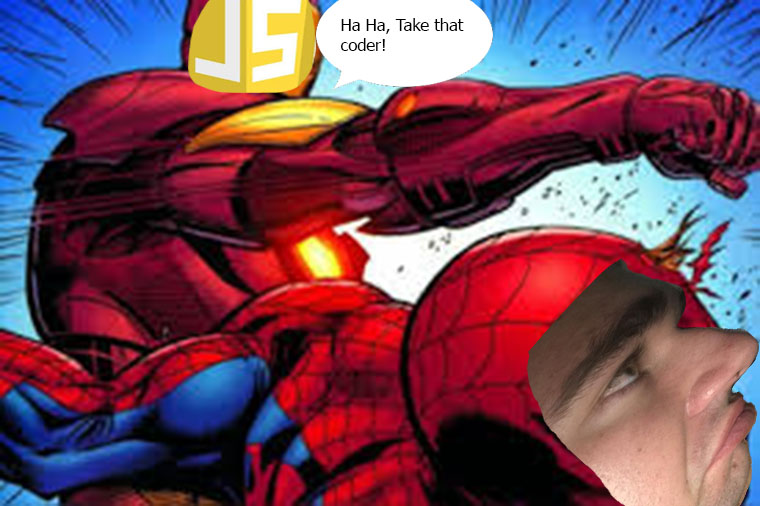
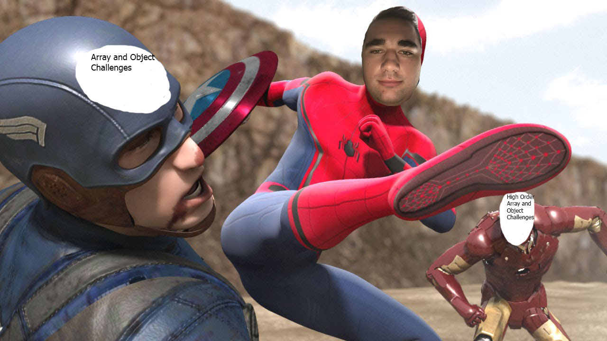
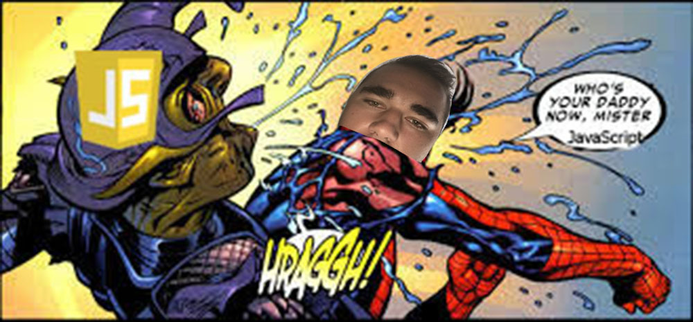

Hello and welcome to my website! I'm Conner Stennett and I'm really excited to tell you about myself as well as show you why I'd make a great candidate for your scholarship.
Coding really wasn't something that I had considered before.In fact, I didn't even really know what coding was before I heard about FullStack university. Before I attended CodeSlo coding was something to appreciate but ignore, an enigma to be praised but too difficult to comprehend. When I forst heard about Ticket Into Tech, it was the perfect timing for me since I was at a crossroads in my life. I was also in a dark place in my life at the time that I heard about FullStack. Cuesta community college didn't fit with my personality, made me feel depressed, and made it hard for me to decide on a career path. To be completely honest I felt like I was forced into a college life that I didn't want to subscribe to. Also like I was aimlessly paying for courses that didn't necessarily have a purpose for my future. I felt like Cuesta was a waste of my time and money, and I was really struggling there. Coding through CodeSlo and FullStack has given me a chance to do something that is truly unique, and has allowed me to focus on something that I am inspired and excited about, a skill that I feel is truly worthwhile to learn.
When I first started CodeSlo I thought I had made sure not to underestimate code, and to keep an open mind while learning it. I quickly realised really fast once the CodeSlo class started that even though I thought I was prepared for everything the class could throw at me, I was very wrong.There was a whole new world with its own language to explore and navigate. Learning the parts of JavaScript that I have turned out to be one of, if not the hardest things I have accomplished so far in my life.
I'm really proud of the progess that I've made in CodeSlo. I feel like I have made tremendous improvements in my ability to read and code JavaScript during the past eight weeks. I went from not knowing anything about JavaScript to having a decent knowledge of the intermediate level of this language. I also feel that the hackathon experience was a extremely educational and led me to fixing some issues with my coding that I didn't even know I had.
I genuinely believe that a coding career is what I would love to do in the future. I believe that with the expert teaching and care that FullStack teachers bring to their bootcamp I can flourish in this area. When I started to learn code through CodeSlo, I was really intimidated. I thought that I would never come to understand how to effectively use JavaScript. Since starting CodeSlo my confidence in myself has gone up leaps and bounds. After going through the CodeSlo program I think that my ability to work with code has finally shown results that I can be proud of. I genuinely believe that if I get accepted into the bootcamp I will thrive. That once I graduate I will impress so many of the people that I work with that they will come back to the FullStack program again and again to look for new candidates for hire.
